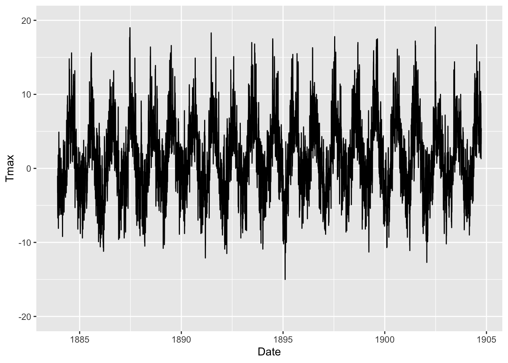
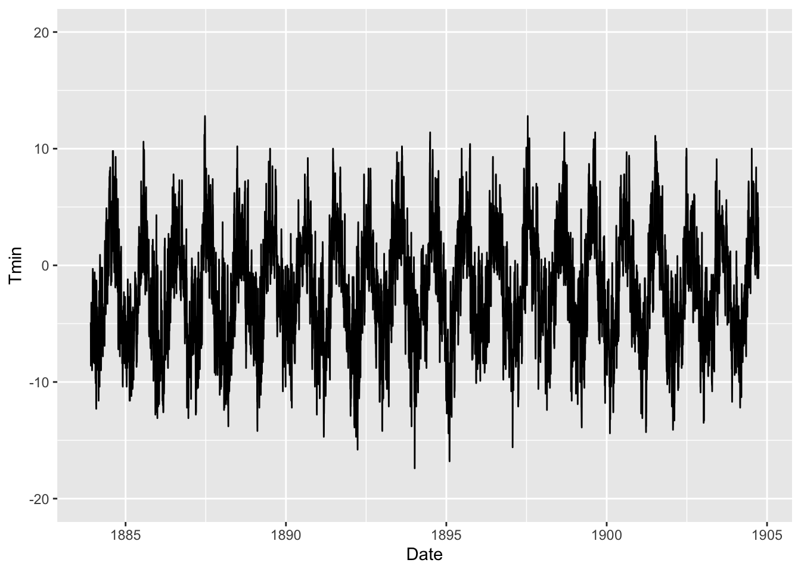
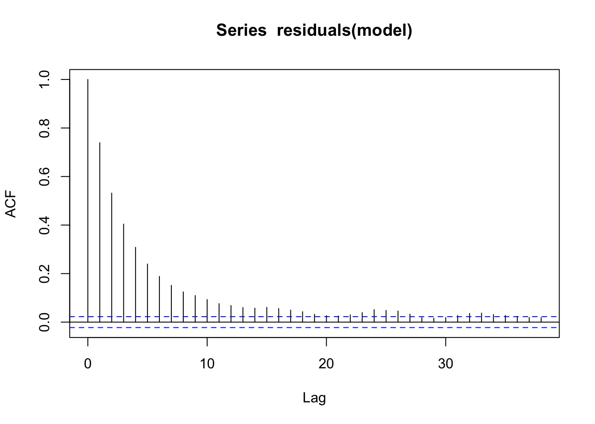
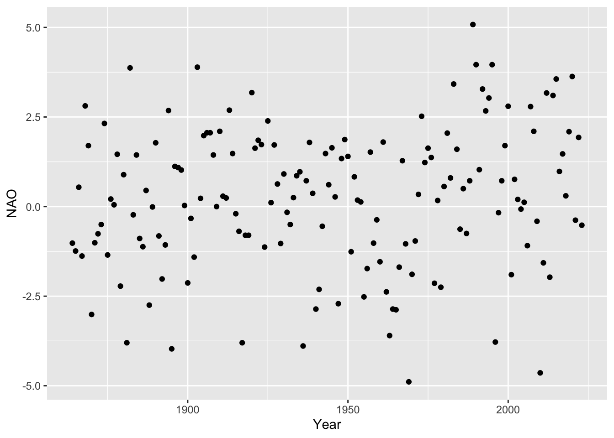

2.1 Time series data
At 1345m above sea level, Ben Nevis is the highest mountain in the UK and the weather at the summit can be very severe. In the 19th century, a remarkable effort was made to document conditions at the summit. Following a public appeal, an observatory was set up on the summit to allow a small group of meteorologists to make recordings. This was done hourly from 1883 to 1904, producing one of the most remarkable weather datasets from the Victorian era. Hawkins et al. (2019) describe a recent citizen science project which has made the data available in digital form. The data are available from the CEDA Archive which contains a very large collection of environmental data from atmospheric and earth observation research.
path <- rp.datalink("Ben_Nevis")
Ben_Nevis <- read.csv(path) %>%
rename(Tmin = 5, Tmax = 6) %>%
mutate(Date = as.Date(paste(Year, Month, Day), format = "%Y %m %d"))
ggplot(Ben_Nevis, aes(Date, Tmax)) + geom_line() + ylim(-20, 20)
ggplot(Ben_Nevis, aes(Date, Tmin)) + geom_line() + ylim(-20, 20)
In time series data, we are often interested in whether there is trend or seasonal effects and what these look like. We may also be interested in the influence of covariates. These may apply to the whole time series, such as characteristics of the location at which different time series are recorded, or they may themselves be time series running in parallel.
A statistical feature which makes time series distinctive is that there is often autocorrelation, meaning that the variation or random component of successive points tend to be linked to the variation at adjacent points. The autocorrelation function, or partial autocorrelation function, quantifies this.

Some of the apparent autocorrelation is driven by the seasonal trend, so we need a model which can fit this kind of systematic component. Nonetheless, autocorrelation may remain so we need to consider this feature when building a statistical model.
Exercise: Winter NAO is a time series. Is there evidence of autocorrelation?
path <- rp.datalink('NAO')
NAO <- read.table(path, header = FALSE, skip = 1) %>%
dplyr::select(Year = 1, NAO = 2)
ggplot(NAO, aes(Year, NAO)) + geom_point()